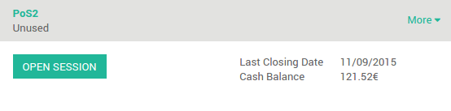

В этом уроке будет описано, как управлять несколькими кассирами. Существует четыре разных способа работы с несколькими кассирами.
Переключатель кассиров без каких-либо параметров безопасности
Для начала, вам просто нужно иметь второго пользователя с правами Пользователь РМК (Перейдите в меню :menuselection: Общие настройки --> Пользователи). На Инфо-панели нажмите Новая смена в качестве основного пользователя.

В верхней части экрана нажмите на имя пользователя.

И переключитесь на другого кассира.

Имя вверху изменилось, что означает, что вы изменили кассира.
Переключение кассира с помощью пин-кода
Настройка
Если вы хотите, чтобы ваши кассиры использовали пин-код, вам нужно установить его, нажав на Настройки.

Затем нажмите на Управление правами доступа.

Нажмите Редактировать в карточке кассира и добавьте PIN-код безопасности на вкладке Рабочее Место Кассира.

Смена кассира
На Иноф-панели нажмите Новая смена.

В верхней части экрана нажмите на имя пользователя.

Выберите вашего кассира:

Теперь вам нужно ввести пин-код пользователя для того, чтобы продолжить.

Теперь вы можете видеть что кассир поменялся.

Смена кассира с помощью бейджа со штрих-кодом
Настройка
Если вы хотите, чтобы ваши кассиры могли сканировать свой бейдж, вы можете установить это, перейдя в Настройки.

Затем нажмите на Управление правами доступа
Нажмите кнопку Редактировать в карточке кассира и добавьте защита пин-кодом во вкладке РМК.
Совет
Будьте осторожны в настройках штрих-кодов, по умолчанию используется штрих-код, начинающийся с [UNKNOWN NODE title_reference] для штрих-кодов кассиров. Если вы хотите это изменит перейдите в раздел .

Смена кассира
На Иноф-панели нажмите Новая смена.

В верхней части экрана нажмите на имя пользователя.

Когда кассир сканирует свой бейдж, вы можете увидеть что имя кассира изменилось.
Назначить сессию на пользователя
Нажмите на меню :пункт menuselection:[UNKNOWN NODE problematic]Рабочее Место кассира --> Чеки --> Смены.

Затем нажмите кнопку Новый и назначить в качестве Ответственного нужного кассира в РМК.

Когда кассир зайдет в систему, он сможет открыть смену
Назначить кассу по умолчанию для кассира
Если вы хотите, чтобы ваши кассиры были прикреплены к конкретным РМК, перейдите в .

Затем нажмите на Управление правами доступа.

Нажмите кнопку Редактировать в карточке кассира и добавьте во вкладке ** Рабочее Место Кассира** РМК по умолчанию.